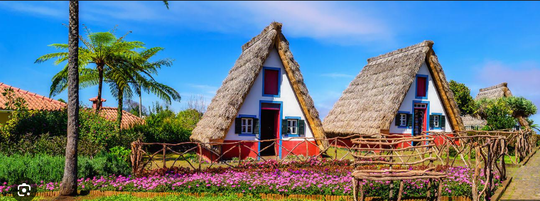
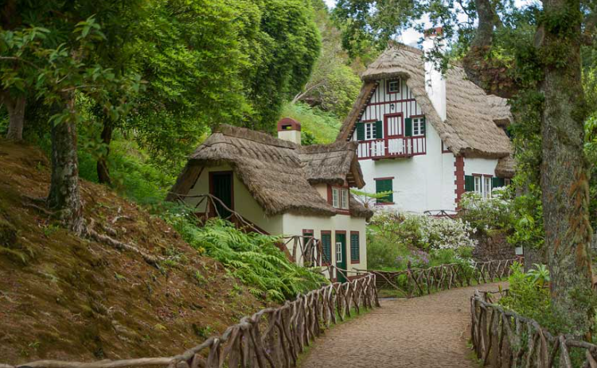

✨ Santana ✨
Viaje a Madeira 🚀
 
Características:
Es un pueblo muy bonito situado al noreste de la isla
Sus casas son de colores brillantes y tienen techos de paja
Está rodeado de un bonito paisaje natural